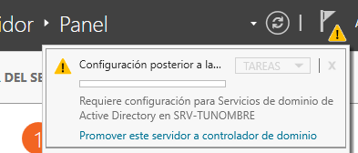
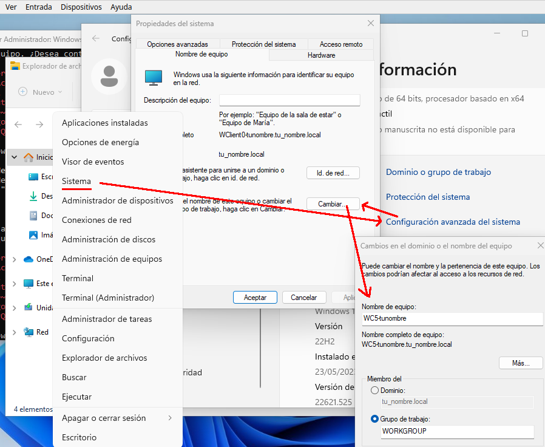
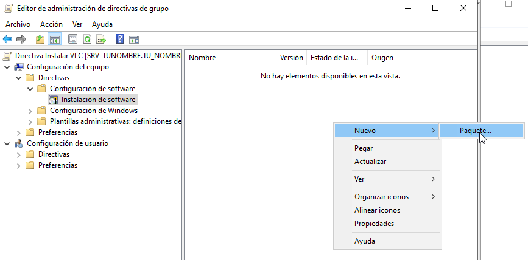
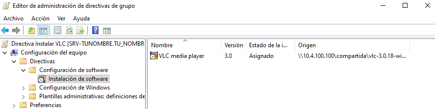
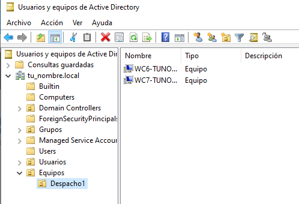
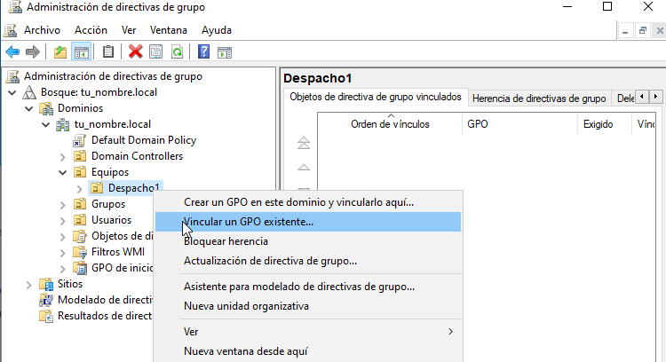
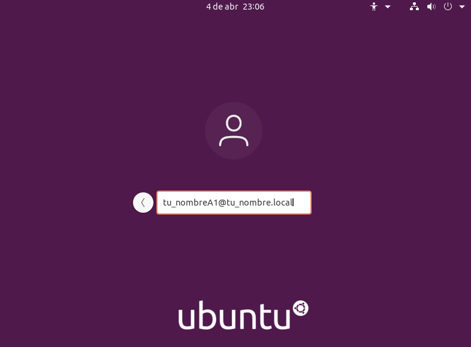
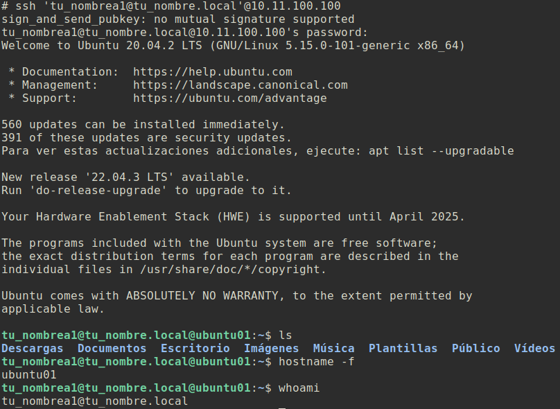

Casos prácticos : Active Directory con adaptador puente#
Crea los siguiente clones enlazados con los adaptadores en modo puente:
Clon enlazado 1 de Windows Server 2022 llamado SRV-tunombre con IP 10.4.X.Y/8, DHCP si es portatil
Clon enlazado 2 de Windows 11 llamado WC5-tunombre 10.5.X.Y/8, DHCP si es portatil
Puedes ver la configuración en el siguiente vídeo
Instalación y configuración de Active Directory y DNS#
En SRV-tunombre vamos a Administrador del servidor/Panel/Agregar roles y características/Instalación basada en características o en roles Seleccionar un servidor del grupo de servidores, escoger SRV-tunombre/Marcar la casilla Servicios de dominio de Active Directory
Creación de un dominio:#
Partiendo de la ventana Resultados de la instalación de Active Directory, pulsar en Promover este servidor a controlador de dominio. (Si se había cerrado la ventana anterior es posible acceder a ella pulsando en el icono de advertencia de la barra de herramientas del Administrador del servidor)
De momento, el servidor SRV-tunombre no pertenece a ningún dominio. Tampoco existe un bosque al que agregar un nuevo dominio. Por lo tanto, el primer paso para formar el dominio tunombre.local es crear un nuevo bosque. Para ello seleccionar la opción Agregar un nuevo bosque. Tras escribir el nombre del dominio: tunombre.local, pulsar Siguiente. En capacidades del controlador del dominio, el Servidor de Sistema de nombres de dominio (DNS) y el Catálogo global (GC) deben estar marcados. Contraseña @lumn0
Verificar el nombre NetBIOS [1] tunombre y pulsar Siguiente
Si todo ha sido configurado correctamente, hacer clic en Instalar.
Por ultimo cuando se reinicie habilita las actualizaciones dinámicas, para ello en Inicio->Herramientas administrativas/DNS/expandir SRV-TUNOMBRE /expandir Zonas de búsqueda directa/ clic el botón derecho del ratón en tunombre.local/Propiedades/General/lista Actualizaciones dinámicas elegir sin seguridad y con seguridad, a continuación hacer clic en Aceptar.
Unidades Organizativas, usuarios y grupos#
La estructura lógica de Windows Server se basa en la utilización de dominios y unidades organizativas. En un dominio se puede crear una jerarquía de unidades organizativas, las cuales pueden contener usuarios, grupos, equipos, impresoras y carpetas compartidas, además de otras unidades organizativas.
Para crear de las unidades organizativas en Inicio/Herramientas administrativas/Usuarios y equipos de Active Directory dentro del domino tunombre.local crea las siguientes unidades organizativas (clic botón derecho del ratón -> Nuevo -> Unidad Organizativa) Usuarios y Grupos

Dentro de la UO Grupos, crea el grupo global de seguridad A y B
Dentro de la UO Ususarios, crea los usuarios:
tunombreA1
Nombre completo: tunombreA1 tuapellidoA1.
Contraseña @lumn0A1
Nombre de inicio de sesión del usuario: tunombreA1@tunombre.local
La contraseña nunca expira
Hazle miembro del grupo A
tunombreA2
Nombre completo: tunombreA2 tuapellidoA2
Contraseña @lumn0A2
Nombre de inicio de sesión del usuario: tunombreA2@tunombre.local
La contraseña nunca expira
Hazle miembro del grupo A
tunombreB1
Nombre completo: tunombreB1 tuapellidoB1.
Contraseña @lumn0B1
Nombre de inicio de sesión del usuario: tunombreB1@tunombre.local
La contraseña nunca expira
Hazle miembro del grupo B
tunombreB2
Nombre completo: tunombreB2 tuapellidoB2
Contraseña @lumn0B2
Nombre de inicio de sesión del usuario: tunombreB2@tunombre.local
La contraseña nunca expira
Hazle miembro del grupo B
Unir un equipo al dominio#
Vamos a unir WC5-tunombre al dominio tunombre.local, para ello:
Cambiamos el nombre de la maquina
Ponemos el DNS la ip del dominio SRV-tunombre.
Haz clic derecho en el botón «Inicio» y selecciona «Sistema > Información» en el menú desplegable.
En la ventana de «Sistema», haz clic en «Configuración avanzada del sistema» en el panel izquierdo.
Se abrirá la ventana de «Propiedades del sistema». Haz clic en la pestaña «Nombre de equipo» y luego en el botón «Cambiar».
En la siguiente ventana, verás la opción «Miembro de». Asegúrate de seleccionar la opción «Dominio» en lugar de «Grupo de trabajo».
Ingresa un nombre del dominio tunombre.local
Haz clic en «OK» para guardar los cambios. Es posible que se te solicite reiniciar el equipo para aplicar los nuevos ajustes.
Quitar el equipo del dominio#
Accede al equipo con una cuenta de administrador local.
Haz clic derecho en el botón «Inicio» y selecciona «Sistema» en el menú desplegable.
En la ventana de «Sistema», haz clic en «Configuración avanzada del sistema» en el panel izquierdo.
Se abrirá la ventana de «Propiedades del sistema». Haz clic en la pestaña «Nombre de equipo» y luego en el botón «Cambiar».
En la siguiente ventana, verás la opción «Miembro de». Asegúrate de seleccionar la opción «Grupo de trabajo» en lugar de «Dominio».
Ingresa un nombre de grupo de trabajo para el equipo. Por defecto, el grupo de trabajo suele ser «WORKGROUP», pero puedes ingresar un nombre diferente si lo deseas.
Haz clic en «OK» para guardar los cambios. Es posible que se te solicite reiniciar el equipo para aplicar los nuevos ajustes.
En el servicdor «Inicio/Herramientas administrativas/Ususarios y equipos de Active Directory/»
Selecciona tunombre.local, y quita los clientes que has sacado del dominio en la pestaña de Computers
Configurar una carpeta compartida#
Las carpetas y archivos en Windows permiten configurar los siguientes permisos:
Control total el usuario tiene control total sobre la carpeta y puede añadir, cambiar, mover y eliminar elementos. El usuario también puede agregar y quitar permisos de la carpeta y subcarpetas.
Modificar una combinación de lectura y escritura. El usuario también tiene la capacidad de eliminar los archivos dentro de la carpeta. También puede ver el contenido de las subcarpetas.
Leer y Ejecutar los usuarios pueden leer el contenido de los archivos y ejecutar los programas de la carpeta.
Vamos a compartir la carpeta C:\compartida alojada en nuestro servidor, con los permisos solo de lectura, para ello:
Con el botón derecho del ratón accedemos a las propiedades de la carpeta vamos a la pestaña de Compartir aqui en Uso compartido avanzado seleccionamos compartir esta carpeta.
En la misma pestaña de Compartir este mismo dialogo nos vamos a Compartir permisos y comprobamos que Todos solo con permisos de Lectura
Como podemos ver esta compartida en: \\SRV-TUNOMRE\compartida o \\10.4.100.100, si el cliente es linux podemos acceder smb://10.4.100.100/
Instalación de software utilizando directivas de grupo#
Puedes ver la configuración en el siguiente vídeo
Vamos a instalar VideoLAN en formato msi [2]. Para ello lo bajamos y lo guardadmos dentro de la carpeta SYSVOL [3] C:\Windows\Sysvol
Para crear un objeto de directiva de grupo, abre la consola de administración de directivas de grupo (Group Policy Management Console) en el controlador de dominio Inicio/Herramientas administrativas de Windows/Administración de directivas de grupo. Crea un nuevo objeto de directiva de grupo (GPO) Instalar VLC

En la pestaña de Configuración/Configuración del equipo vamos a Edición

En Directiva Instalar/Configuración del equipo/Directivas/Configuración de software creamos un nuevo paquete
Especificar la ubicación del programa (.msi o .exe) dandole la ip y la carpeta compartida,para este caso usaremos la carpeta compartida que hemos creado, por lo general usaremos SYSVOL [3], lo siguiente será seleccionar una instalación asignada, es decir (se instala automáticamente cuando se inicia sesión) en el caso de seleccionar la instalación publicada (el usuario puede elegir instalarlo desde el Centro de software de Windows).
Haz un par de clientes más para nuestro dominio. Crea una nueva UO llamada Equipo y dentro crea otra llamada Despacho1, deja el cliente WC5-Tunombre fuera y dentro del Despacho1 el cliente WC6-Tunombre y WC7-Tunombre
En la consola de administración de Directivas de grupo, navega hasta Despacho1, haz clic derecho en la OU y selecciona Vincular un GPO existente
Los cambios en las políticas de grupo pueden requerir que el cliente se reinicie para que las configuraciones tengan efecto. Por otro lado si queremos aplicar nosotros mismos las directivas de grupo en los clientes de Windows, abre una ventana del símbolo del sistema (cmd) o PowerShell y ejecuta el comando gpupdate /force. Esto obligará al equipo a buscar y aplicar las nuevas directivas de grupo.
Footnotes
Unir un cliente Ubuntu al dominio#
Puedes ver la configuración en el siguiente vídeo
Configura la IP 10.10.X.Y/8 (255.0.0.0), donde X.Y son parte de las ips de vuestros equipos, con gateway 10.0.0.2 y subred 10.0.0.0/8 en el caso de que tengas un portátil utiliza DHCP.
Cambia el DNS (ip windows server), haz que aparezca en /ets/hosts el nombre del dominio y sincroniza temporalmente los dos ordeandores.
Instalar los paquetes necesarios:
apt install sssd-ad sssd-tools realmd adcli
apt install krb5-user
#Reino predeterminado de la versión 5 de Kerberos:
Reino de Kerberos: tunombre.local
Servidores : srv-tunombre.tunombre.local
Servidor administrativo: srv-tunombre
Deshabilitamos la resolución inversa de DNS (rdns = false) en /etc/krb5.conf
head -3 /etc/krb5.conf
[libdefaults]
default_realm = TUNOMBRE.LOCAL
rdns = false
Añadimos nuestro Ubuntu al AD:
sudo realm join --user=Administrador -v tunombre.local
Para que se cree el home de forma automatica cuando se loguea el usuario
pam-auth-update
Seleccionar otro usaurio
{kind=link}
Tambien puedes conectarte por ssh
{kind=link}
Ayuda: Usa «kinit administrador@tunombre.local» para iniciar sesión como administrador en el dominio. Puedes verificar la configuración DNS en «/etc/resolv.conf». Recuerda sincronizar los relojes de los sistemas para mantener una hora precisa en toda la red.